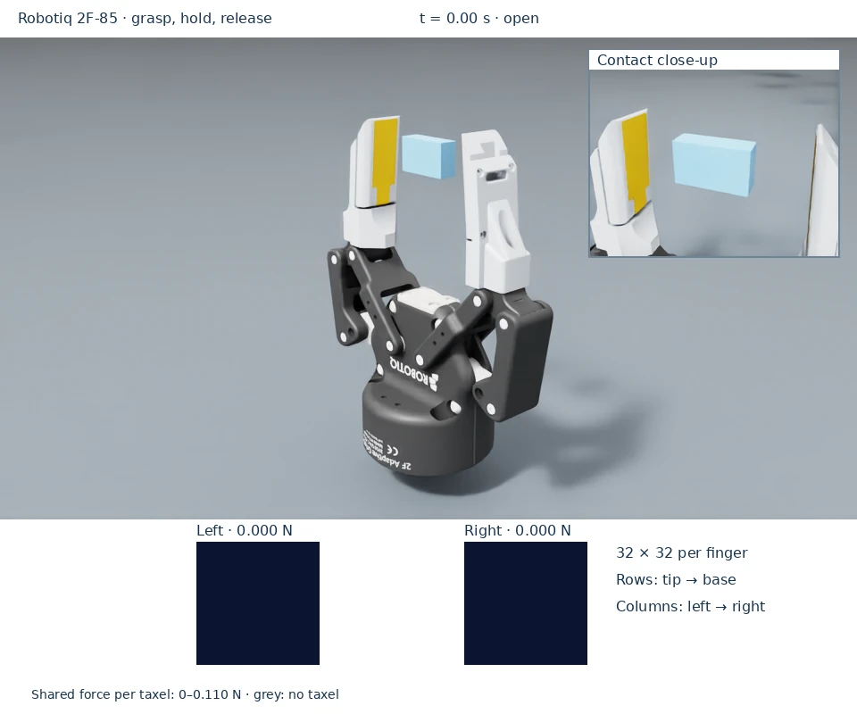
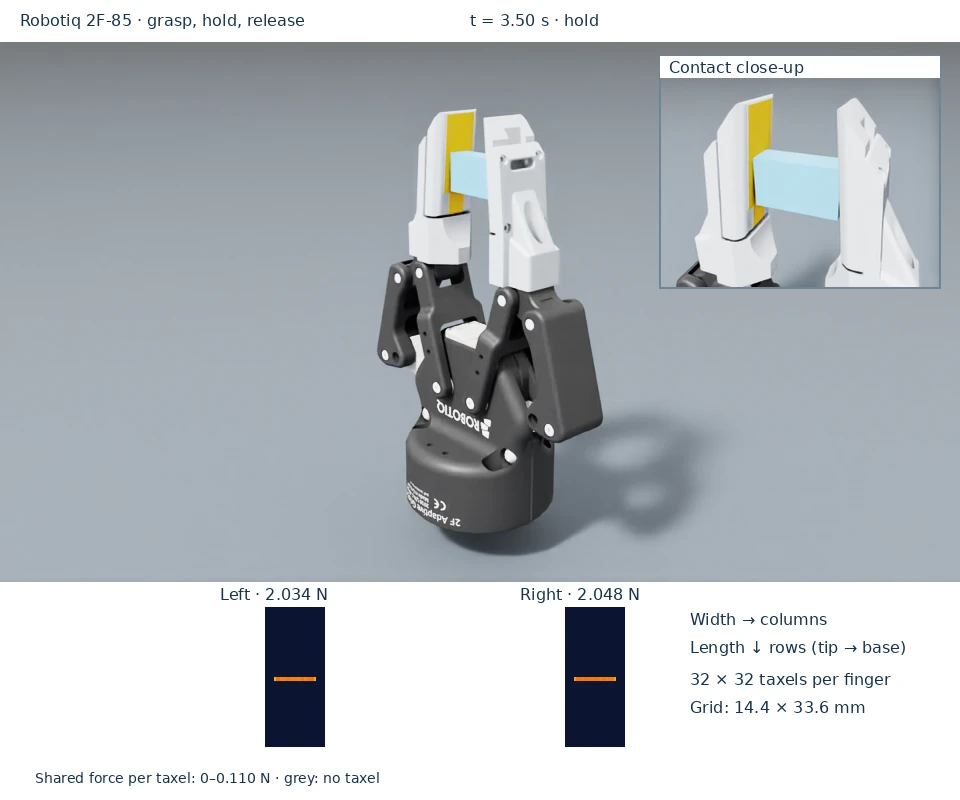
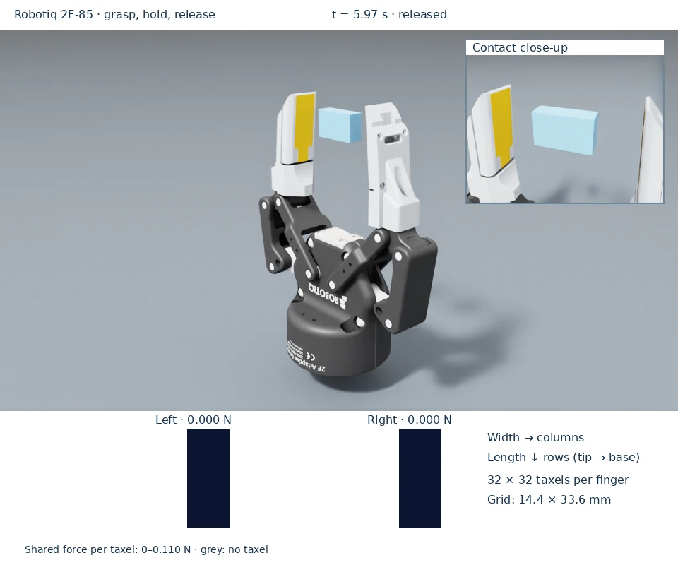

Rectangular DEX-01 on the Robotiq 2F-85
The custom finger combines the adapter, carrier and sensing exterior into one connected, watertight mesh. It omits the PCB. Each jaw carries a 32 × 32 grid on its 37 × 16 mm rectangular contact face.



The 180 frames were captured from Isaac Sim 5.1 physics and rendered using native Isaac Sim 6.1 RTX cameras. The renderer checks every body pose and mesh vertex against the capture, keeps its timeline stopped, and uses the recorded force arrays without interpolation. See provenance.
The gripper asset references Isaac Sim 5.1’s official
Isaac/Robots/Robotiq/2F-85/Robotiq_2F_85_edit.usd, using its Physx_Mimic
variant. It replaces only the stock fingertip geometry on each inner-finger
link. The original moving linkage and its joints remain in the referenced
asset. NVIDIA geometry is downloaded by Isaac Sim, not redistributed here.
Run the integration
After installation, run:
python scripts/dex01_on_robotiq_2f85.py
The fixed-base gripper closes on a free 0.1 kg, 10 × 30 × 18 mm block, holds contact, and opens again. Gravity and damping are disabled on the block to isolate the contact dynamics. It moves freely in response to contact forces. The viewport shows separate left/right tactile frames in newtons. The example runs one six-second cycle at 240 Hz. The block is a contact fixture, not a weight-calibration load.
For a headless run and independent report check:
python scripts/dex01_on_robotiq_2f85.py \
--headless --num-envs 2 --no-tactile-ui \
--verification-report /tmp/robotiq-contact.json
python scripts/dex01_on_robotiq_2f85.py \
--check-report /tmp/robotiq-contact.json
The checker requires sustained contact on both pads in every environment, zero load after release, gripper motion, a stationary base, and agreement between active taxel loads, their 32 × 32 images, and filtered PhysX normal contact forces. Contact generated before any discrete taxel penetrates the counter object is reported separately. Unresolved contact is not permitted during the sustained hold. It also checks bilateral hold-force difference below 0.1 N and independently compares the block’s measured momentum change with the sum of normal and friction impulses (1 µN·s tolerance).
Resolve the official asset library
The example resolves the library with Isaac Sim’s standard
isaacsim.storage.native.get_assets_root_path() API and appends
Isaac/Robots/Robotiq/2F-85/Robotiq_2F_85_edit.usd. It follows the configured
/persistent/isaac/asset_root/default setting, so a changed server or local
asset pack does not require editing the gripper integration.
For one invocation, --asset-root /path/to/Assets/Isaac/5.1 selects another
library root. --gripper-usd /path/to/Robotiq_2F_85_edit.usd selects an exact
file instead. Keep its relative configuration, payloads, parts and
materials dependencies.
The reusable USD uses the standard ISAAC_ASSET_ROOT expression variable,
with the versioned NVIDIA 5.1 library as its default. A containing USD stage can
override that variable without changing the asset or its reference path:
stage.GetRootLayer().expressionVariables = {
"ISAAC_ASSET_ROOT": "/path/to/Assets/Isaac/5.1",
}
The builder also accepts --asset-root or --gripper-usd. USD expressions do
not read application settings themselves; the runnable example explicitly
connects the native asset-root API to the generated layer. The relative gripper
path and articulation contract remain specific to the tested asset revision.
See NVIDIA’s asset-root configuration
and OpenUSD variable expressions.
Geometry and indexing
View either contact face with its fingertip pointing up:
Row 0 is nearest the tip; rows increase toward the base.
Column 0 is on the viewer’s left; columns increase toward the right.
(0,0)is the tip-left taxel. There is no separate linear ID.
This is the physical convention of the existing humanoid fingertip. The
rectangular NPZ stores positions_m and normals, both shaped
(32,32,3), for the simulation’s sampling grid.
The grid contains 1,024 spatial sensing sites registered to the finished contact face at 1:1 scale.
The finger’s local origin is the center of its 5.3 mm mounting bore on the
bottom mating plane. Local X runs across its width, Y toward the contact face,
and Z toward its tip. The contact face retains the CAD’s 5° inclination.
Positions are in metres and quaternions use (w,x,y,z).
The 16 mm sensor is centered across the 25 mm carrier. Hashes and coordinate
conventions for the approved mesh and taxel grid are recorded in
assets/robots/robotiq_2f85/reference.json.
The thicker adapters require a 35.9° closing limit, below the stock 47° limit. The authored parallel-jaw kinematics retain a conservative minimum 0.58 mm separation between opposing finger envelopes at this stop. The demo uses the same limit. Assess clearance again if changing the geometry or mounting.
Use the assets in another scene
Spawn assets/robots/robotiq_2f85/robotiq_2f85_dex01.usda as an articulation.
It contains a fixed joint anchoring its base. The standalone finger is
assets/robots/robotiq_2f85/finger.usda; its single geometry mesh supplies
both appearance and SDF collision geometry, with separate material subsets
for the structure and sensing surface.
Use RectangularDex01PatternCfg and point the sensors at the existing
Robotiq_2F_85/left_inner_finger and right_inner_finger rigid-body links.
The example’s sensor() configuration applies the same mount transform as
the finger geometry. mesh_prim_path must identify one SDF counter object per
sensor, as described in attachment.
The finger mass, assembled jaw mass, contact stiffness/damping and actuator gains are simulation assumptions. The supplied free-block check validates contact and indexing; it does not identify hardware dynamics or sensor material properties. The model reports normal force only.
Rebuild and validate
Rebuild the USD assets from the approved exterior OBJ and taxel grid:
python scripts/build_robotiq_asset.py
python -m pytest tests/test_robotiq_assets.py tests/test_taxel_patterns.py -q
USD rebuilding requires usd-core or the initialized Isaac Sim environment.
Outside Isaac Sim, USD may warn that it cannot resolve the NVIDIA HTTPS
reference; the integration layer is still authored. To inspect the composed
stage with ordinary USD tools, rebuild into a temporary directory using
--gripper-usd and an unchanged local mirror.
Run the live check above after changing sensing, mounting or geometry. To reproduce the documentation media, run the capture in the physics environment:
python scripts/docs/capture_examples.py --example robotiq --output /tmp/robotiq-capture
Then use the configured renderer environment from the documentation guide:
python scripts/docs/render_examples.py --capture /tmp/robotiq-capture --output /tmp/robotiq-render
See NVIDIA’s closed-loop gripper tutorial for the official gripper’s layered asset and articulation design.